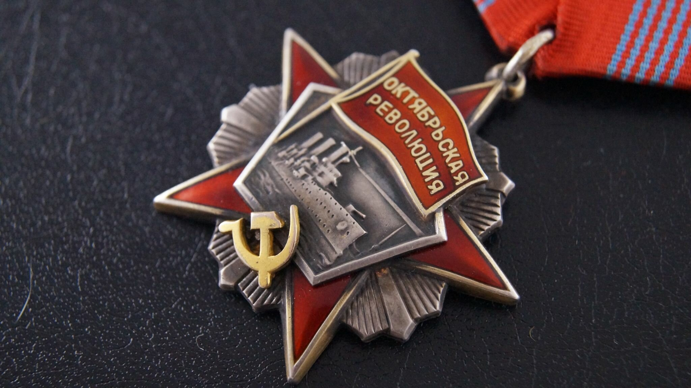

Согласно архивным документальным материалам (Центральный Государственный Архив древних актов — ЦГАДА, г. Москва) по фондам государственной Берг-Коллегии (Главное управление горным делом России) следует, что 23 мая 1755 года симбирскому купцу и владельцу медных заводов Ивану Твердышеву совместно с его зятем Иваном Мясниковым было разрешено построить железоделательный завод в Оренбургской губернии, Уфимском уезде на речке Катав в составе двух домен для выплавки чугуна и восьми молотов для переделки чугуна в железо. Так, в середине XVIII века был построен и возник Катав-Ивановский металлургический завод, рассчитанный на бакальские железные руды. В 1756 году Твердышев и Мясников году развили бурную деятельность по скупке у башкирских старшин земель и лесов вокруг завода, в которых были обнаружены залежи железных руд. 8 июля 1757 года теми же заводчиками заявлены в «Оренбургское горное начальство» еще два железных рудника на горе Зяр-Кускан (ныне рудник Иркускан). Наряду с Твердышевым и Мясниковым в начале второй половины XVIII века на Южный Урал начали проникать ставленники барона Строганова. В 1756–1757 годах барон Строганов открыл пять рудников по добыче железной руды.
Впервые руда на бакальских рудниках начала добываться для Катав-Ивановского завода с сентября 1757 года, эта дата и считается датой
основания Бакальских рудников, которые в 2007 году отметили свое 250-летие. Позднее бакальские железные руды стали поступать также
на Симский металлургический завод, который был пущен в 1761 году, и Юрюзань-Ивановский, пущенный в 1763 году.
Бакальская группа железорудных месторождений находится на западном склоне Южного Урала в Саткинском районе Челябинской области,
суммарные запасы которых по состоянию на 1 января 2008 года составляют 994,0 млн. тонн, из них 34,3 млн. т представлены бурыми
железняками и 959,7 млн. т — сидеритами (карбонаты железа). Среднее содержание железа в бурых железняках составляет 42,6%, в сидеритах — 31,0%.
Бакальские сидериты являются ценным сырьём для получения высококачественных сталей. Это определяется высокой стабильностью их химического состава,
низким содержанием вредных примесей, высокой прочностью, в обожжённом состоянии — хорошей восстановимостью. Благоприятный состав пустой породы,— основностью
до 2,0….2,5 единиц, даёт основание отнести данное комплексное сырьё к категории железофлюсов.
Добыча железных руд на Бакале началась в сентябре 1757 года. Из всей группы месторождений, входящих в состав теперешнего Бакальского рудоуправления, в первые
годы руда добывалась на так называемых Буланских рудниках, входящих в состав Успенского рудника (с 1928 года — имени ОГПУ, с 1991-го — Шуйдинский участок Объединенного карьера),
Тяжелого, Охряного и Ивановского рудников, которые все расположены в южной и восточной стороне от собственно Бакальских рудников. С 1817 года была начата добыча на бывшем
казенном руднике Бакал, называвшемся Вагонная Яма, и южной его части — Бакальчик, и еще позднее, уже в 1901 году, на открытом тогда руднике Старый Бакал
(впоследствии рудник имени В. И. Ленина). Все эти три рудника (Бакальчик, Вагонная Яма и Старый Бакал) составляли собственно Бакальские рудники, расположенные
на западном склоне Буландихи. В них залегали высококачественные малофосфористые руды, которые поставлялись казенным Саткинскому и Златоустовскому металлургическим заводам.
После Великой Октябрьской социалистической революции, в период гражданской войны и полной хозяйственной разрухи в стране, Бакальские рудники, находясь в тяжелых условиях, работали на низких оборотах. Добыча руды составила в 1922 году всего лишь 6,1 тыс. т. И только с 1923 года начался крутой подъем производства, который в дальнейшем продолжался непрерывно. Уже в 1928 году рудники выдали 325,7 тыс. т руды, чем превзошли уровень максимальной добычи дореволюционных лет.
Начавшаяся в 1941 году Великая Отечественная война с германским фашизмом на протяжении всего периода потребовала от Бакальских рудников максимального использования всех рудных ресурсов
и эксплуатационных возможностей. За военные годы Бакальские рудники выдали 3794 тыс. т, среднегодовая добыча руды составила 760 тыс. т, то есть увеличилась против довоенного уровня почти в 1,7 раза.
В 1945 году объемы производства против последнего предвоенного 1940 года увеличились: по добыче сырой руды — в 2,5 раза, в том числе подземных работ в 2,5 раза, по конечной руде — в 3,2 раза и по вскрышным работам в 1,4 раза.
Для обеспечения все возрастающей добычи руды последовательно вводились в эксплуатацию новые карьеры: Восточный, Александровский, Ивановский, Охряный, Западный под Шишкой, Ново-Бакальский, Шуйдинский и в последние годы — Петлинский.
Подземная добыча осуществляется на шахте «Сидеритовая». Комплекс шахты состоит из двух вспомогательных и двух вентиляционных стволов, а также выдачного наклонного ствола, оборудованного конвейерным ставом с шириной ленты 1400 мм и длиной 932 м под углом 18?. Отличительной особенностью шахты является оснащение ее подземным дробильным комплексом с рудоперепуском и выдачей дробленой руды наклонным конвейером (по стволу) в корпус среднего дробления ДОФ.
Первичная профорганизация работников ООО «Бакальское рудоуправление»
Историческая справка:
.png)